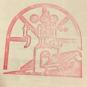
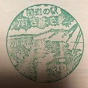

「関東」道の駅スタンプラリー


2016年度は165駅だった関東の道の駅も、3年後の2019年には175駅と10か所も増えました。
現在は1か所しかない東京都、3か所しかない神奈川県の道の駅も新たな道の駅の建設に向け各市区町村で計画中です。
また、一部既存の駅でもリニューアルや増設など、常に進化をし続け盛り上がっていく道の駅。今後も見逃せません。
関東道の駅スタンプブックは「前頁カラー・１駅１頁で各駅のおすすめ」が載っていて見ごたえたっぷりの大容量！
スタンプを集めながら各地域の名産物や名所、新しい発見を探しに旅に出てみませんか？
チー〇くんや、ふ〇っしーなど人気のゆるキャラの多い千葉の道の駅はほぼ房総半島に集中しています。
有名テーマパークだけじゃない！海岸線をドライブしながら道の駅に寄って、美味しい海鮮を食べて、夜は温泉で湯ったり。そんな大人の旅が楽しめる関東の穴場的存在。
（駅名にやたらサブタイトルやキラキラねネームの様な当て字をつけがちなところも割と気に入ってる）
誰が言ったか“ダ埼玉”。でも今や某映画のおかげか？それとも道の駅のおかげか？じわじわキテます。地元農家さんの作った新鮮がわんさかの埼玉道の駅
地域の情報センターや資料館、そして温泉施設などなど。地元の人の利用頻度が高そうな、THE★地元の道の駅
なぜか写真など記録不足が多い埼玉。リベンジして記事も徐々に書き直しの予定。
| 駅名 | １ あらかわ | ２ おがわまち | ３ 川口・あんぎょう |
|---|---|---|---|
| 備考：営業時間はメイン館の時間です。季節により早い開店や遅い閉店時間がありますが、無難なメイン時間を記載しています。 | 【営業時間】9:00-17:00 数年前はウリボーがいたらしい。小さなでも地元名産品が多くてホッコリ癒される道の駅。 （2017/3/25訪問） |
【営業時間】9:30-17:00 和紙のふるさと。資料館や工芸館があるよ。 （2017/1/15訪問） |
【営業時間】10:00-17:00 公民館的な施設もあって地元人達の地域交流の場。盆栽博覧会は圧巻！ （2017/1/14訪問） |
| ４ 大滝温泉 | ５ おかべ | ６ 龍勢会館 | ７ 童謡のふる里おおとね |
| 【営業時間】9:00-17:00 三峯神社の帰りに温泉 （2018/3/17訪問） |
【営業時間】8:30-19:00 記録不足のため、要再チャレンジ！ （2017/1/14訪問） |
【営業時間】9:00-17:0 お土産は秩父ゆず商品で決まり。近くに秩父行きバス停あります。 （2017/3/26訪問） |
【営業時間】9:30-18:00 国民的大ヒット曲「たなばたさま」の作曲家：下總さんの銅像が目印です。 （2017/1/14訪問） |
| ８ はなぞの | ９ 両神温泉薬師の湯 | １０ かわもと | １１ めぬま |
| 【営業時間】9:00-19:00 記録不足のため、要再チャレンジ！ （2017/1/15訪問） |
【営業時間】9:00-17:00 町営バスは数時間に１本。苦労してたどり着く温泉は・・・トロトロ最高のお湯。 （2017/3/25訪問） |
【営業時間】9:00-17:00 深谷ねぎがカゴにわんさか。広くて新鮮野菜がたくさんで盛り上がる様子は市場みたい！ （2017/1/15訪問） |
【営業時間】9:00-17:30 バラ園があります。冬以外がおすすめ！ （2017/1/15訪問） |
| １２ ちちぶ | １３ アグリパークゆめすぎと | １４ 果樹公園あしがくぼ | １５ いちごの里よしみ |
|  | |||
| 【営業時間】9:00-19:00 国道沿いにある道の駅。近くに複合施設もあって行きやすい。 （2017/3/26訪問） |
【営業時間】9:00-17:00 記録不足のため、要再チャレンジ！ （2017/1/14訪問） |
【営業時間】9:00-16:00 道の駅には珍しい。電車の駅前の道の駅。冬の氷柱祭りの観光とセットに！ （2017/3/25訪問） |
【営業時間】11:00-15:00 150円の天ぷらの盛り合わせとうどんがおすすめ。食後のデザートはいちご生どら焼き♪ （2017/1/15訪問） |
| １６ きたかわべ | １７ 庄和 | １８ はにゅう | １９ みなの |
 |
|||
| 【営業時間】8:00-17:00 記録不足のため、要再チャレンジ！ （2017/1/14訪問） |
【営業時間】8:00-19:00 日本一の大凧が目印！ （2017/1/14訪問） |
【営業時間】8:30-19:00 パスタソースも売ってる地元スーパーのような気軽な道の駅。羽生SAを想像してはいけない。 （2017/1//14訪問） |
【営業時間】8:30-17:30 JAから道の駅に変わって３倍売れるようになったそうな。直売野菜もTHE★JAって感じで良い。 （2017/3/26訪問） |
| 駅名 | １ 八王子滝山 | 今後の増加に期待！！ | |
|---|---|---|---|
| （予備欄 広告スペース |
|||
| 備考：営業時間はメイン館の時間です。季節により早い開店や遅い閉店時間がありますが、無難なメイン時間を記載しています。 | 【営業時間】9:00-17:00 東京都唯一の道の駅！珍しいとうもろこしアイスは必食。八王子刑務所の方々がつく多工芸品も （2017/7/29訪問） |
今後の増加に期待！！ |
| 駅名 | １ とみざわ | ２ 甲斐大和 | ３ なるさわ |
|---|---|---|---|
| 備考：営業時間はメイン館の時間です。季節により早い開店や遅い閉店時間がありますが、無難なメイン時間を記載しています。 | 【営業時間】8:30-18:00 （訪問） |
【営業時間】9:00-18:00 （2017/12/10訪問） |
【営業時間】9:00-18:00 （2017/7/2訪問） |
| ４ みとみ | ５ しもべ | ６ とよとみ | ７ にらさき |
| 【営業時間】9:00-17:00 （2017/12/10訪問） |
【営業時間】9:00-17:00 （2019/6/18訪問） |
【営業時間】9:00-18:00 （2019/6/9訪問） |
【営業時間】9:00-17:30 （2019/6/9訪問） |
| ８ どうし | ９ かつやま | １０ 花かげの郷まきおか | １１ はくしゅう |
| 【営業時間】9:00-18:00 （2017/7/2訪問） |
【営業時間】9:00-17:00 （2017/7/2/訪問） |
【営業時間】9:00-17:30 （2017/12/10訪問） |
【営業時間】9:00-18:00 （2019/6/9訪問） |
| １２ 富士吉田 | １３ 南きよさと | １４ しらね | １５ こぶちさわ |
|  | |||
| 【営業時間】9:00-18:00 （2017/7/2訪問） |
【営業時間】8:30-17:00 （2019/6/9訪問） |
【営業時間】8:30-17:15 （2019/6/8訪問） |
【営業時間】9:00-18:00 （2019/6/9訪問） |
| １６ みのぶ富士川観光センター | １７ たばやま | １８ 富士川 | １９ こすげ |
| 【営業時間】9:00-17:00 （2019/6/8訪問） |
【営業時間】10-00-17:00 （訪問） |
【営業時間】9:00-18:00 （2019/6/8訪問） |
【営業時間】9:00-18:00 （訪問） |
広告用スペース